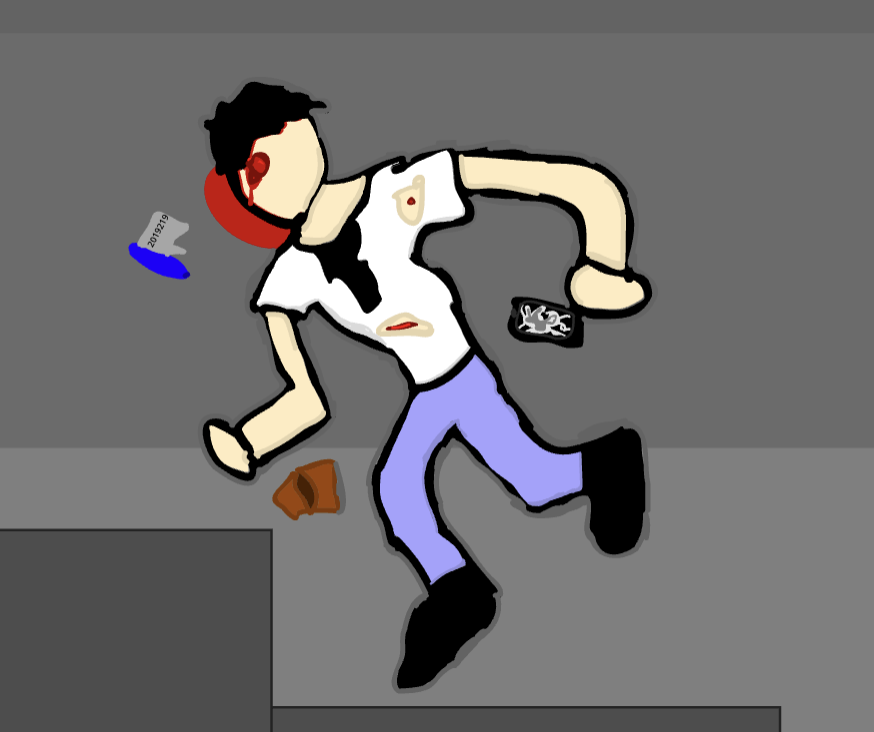

Before Murder:
A Normal Worker At Galapsod Working His 9 To 5 At Office Angry Because They Wont Pay Him
He Needs to Pay Of Debt Not From Taxes Not From Rent Not From The Bank But From Unknown Sources
Later While Leaving At 5:32 Am Being Found Dead At 7:15 Am
The Only Things That He Was Holding Where a Open Empty Wallet, A Cut Office T-Shirt, A Bullet In His Head,
A Shattered Phone, a Pen With A Paper Inside Written In The Paper Was 2019219 And A Charger Found In The Building That Was His
There Where Some Witneses
We Brought Them For Further Questioning Those People Being Henry, John And Kile
You Will Go In Those Rooms And Question Each One You Will Have To Confire The Evidence
Go Get Them Detective